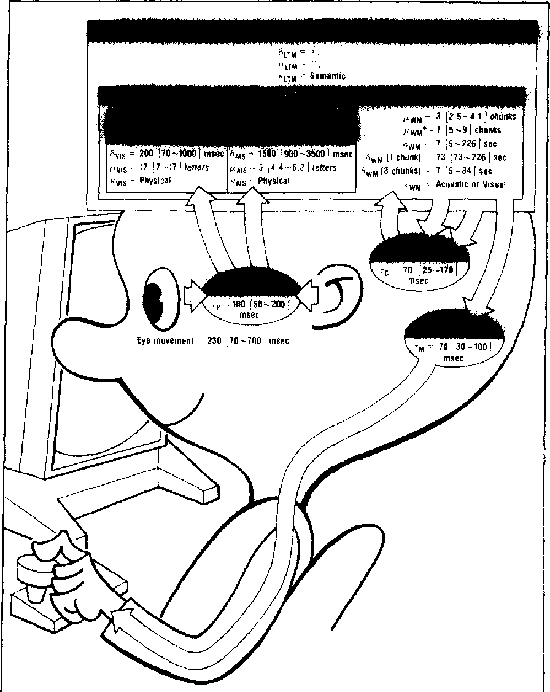
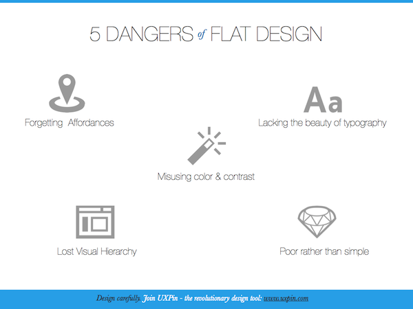
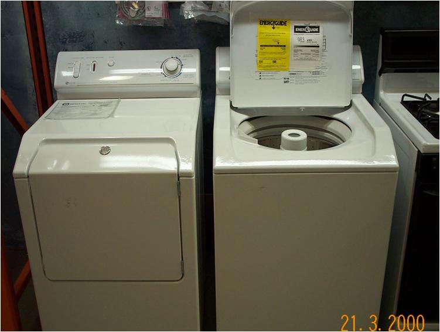
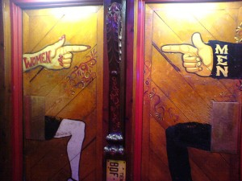
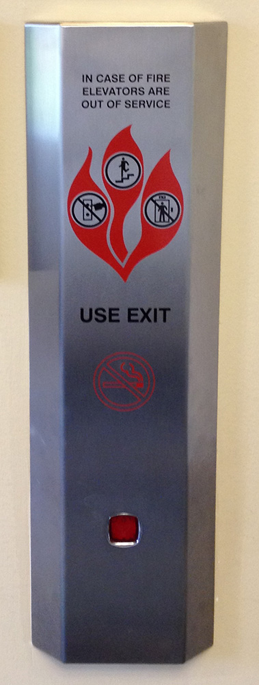

Info & Interaction Design, Audience
Mick McQuaid
2022-09-07
Day FIVE
But first … Draw a face
- Most of you didn’t need it
- None of you submitted examples of good design!
- Some needed better scans
- Some need the exercises in Dodson (2006)
Audience
Academic Communities
- Human Factors in Schools of Engineering
- Human Computer Interaction in Schools of Computer Science & in iSchools
- Management Information Systems in Schools of Business
Human Factors
- People operating complex machines
- automobiles
- ships
- planes
- nuclear reactors
- Reaction time
- Situational awareness
- Split-second decision making
Human Computer Interaction
- Evolved from ideal user to communities
- Started by cognitive psychologists
- First home was in computer science
Management Information Systems
- Adoption of technological innovation
- Diffusion of technological innovation
- Always in productive organization context
- Concerned with management of technology
Epochs in Human Computer Interaction
- The idealized individual
- The casual individual
- Workgroups
- Ubiquitous Computing
- Communities of Practice
- Communities of Place
Industrial and Government Communities
You want me to deprioritize my current reports until you advise of a status upgrade?
Make these your primary action items.
— dialog from Fight Club, 1999
Suppliers of IT
Who are suppliers of IT today? How do you measure? Public awareness? Market Capitalization? What industry codes are applicable?
Customers of IT
This group can best be defined by students.
Historical perspective, revisited
- idealized user
- casual user
- workgroup
- groups in general
- ambient computing
Idealized user
The idealized user was studied intensively by Herbert Simon and his associates at Carnegie-Mellon. They broke tasks into very small components and investigated the state of mind of users at every moment.

Nondiscretionary use
- Labor was cheap
- Machines were expensive
- Therefore, make labor more efficient
Hierarchical collaboration
- 1980s
- Most HCI work funded by DoD
- Collaborating in rigidly defined hierarchies
Workgroup cooperation
- Partly a reaction to DoD-funded research
- Partly a generalization
- Workgroups without a rigid hierarchy
Discretionary computing
- Games
- Non-workplace activities
- Driven by falling price of computers
Ubiquitous computing
- Mark Weiser’s famous article coined the term
- Raised awareness that cheap computers everywhere were the future
- Principles:
- The purpose of a computer is to help you do something else.
- The best computer is a quiet, invisible servant.
- The more you can do by intuition the smarter you are; the computer should extend your unconscious.
- Technology should create calm.
Communities of Practice
- E.g., radiologists adopting new technology
- Requires extensive knowledge of each discipline
Communities of Life
Community development, such as preached by Saul Alinsky, precedes the HCI community’s interest.
Communities and infrastructure
- housing
- health care facilities
- quality of air and water
- postal and shipping services
- roads
- other transportation facilities
- schools
- utilities
- waste removal
- sewage
- watershed maintenance
Community organizers
- Work at a very small scale
- Are rarely successful at bringing families out of poverty
- Suffer from stovepiping

Upskilling as a community solution
- Risks depleting the community of employment age individuals
- Attracts industries that may not help the community
Communities of place and HCI
- HCI history
- HCI has made a conscious decision to try to make a difference to communities
- High-profile HCI projects have struggled to make a difference to communities
Disability-specific design
UT-Austin is notable as a disability-friendly campus, according to https://www.collegeconsensus.com/rankings/best-disability-friendly-colleges/
Approaches to disability-specific design
Shinohara, Bennett, and Wobbrock (2016) identified four different approaches to disability-specific design and listed some of the research in each approach, which I will repeat here:
Other design approaches of note
Popularization via bad design
Norman (2013) popularized the identification of bad design in its first edition in the eighties.
Flat design risks
Bad door
Bad and less bad door

Anti-ADA door
Bad dryer
Bad iPad
Bad iPad’s ancestor
Bad elevators

References
END
Colophon
This slideshow was produced using quarto
Fonts are League Gothic and Lato